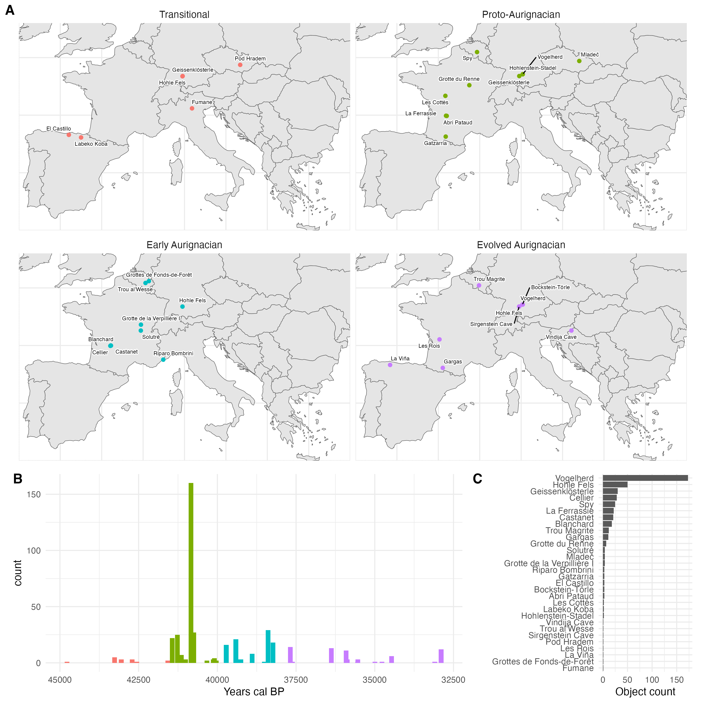
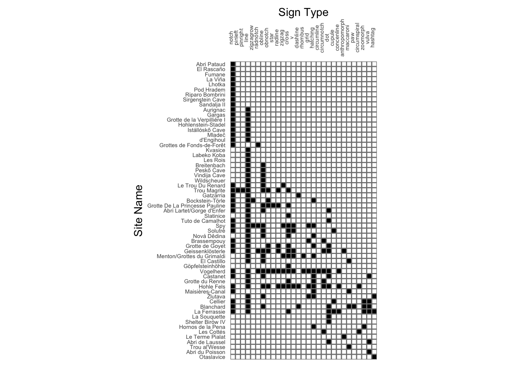
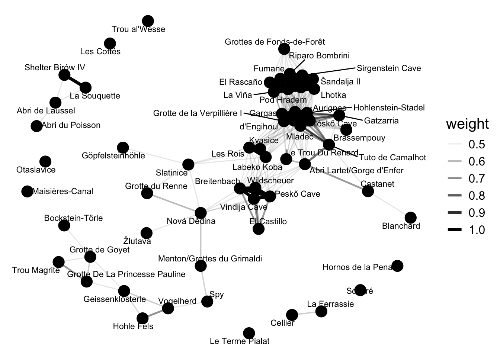
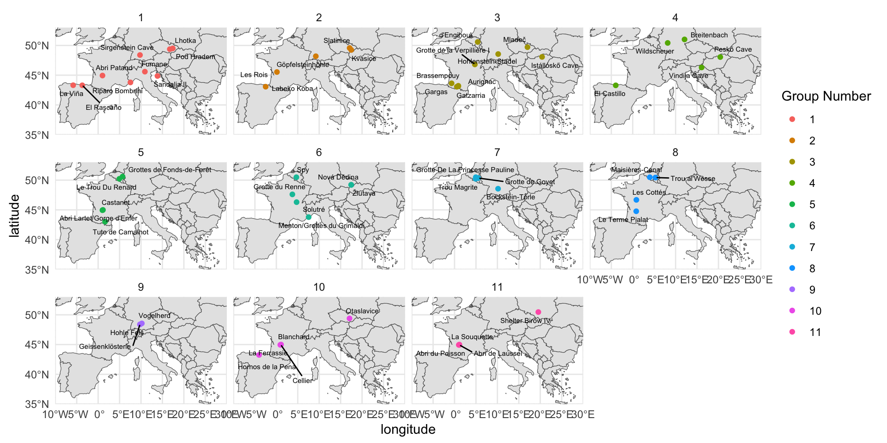

| Time Period Name | Dates (k cal BP) | Material Culture Markers | Environmental Context |
|---|---|---|---|
| Transitional | 43 - 41.5 | Sidescrapers, bladelets, split-base points, flake production scheme, Mousterian influences still present | Preceeded by Greenland Stadial 12, ends with GI 11 |
| Proto-Aurignacian | 41.5 - 39.8 | Large, straight bladelets from prismatic and pyrimidal cores | GI 9 and 10 |
| Early Aurignacian | 39.8 - 37.8 | Twisted bladelets produced from carinated cores | Begins with Henrich Stadial 4, ends with GI 8 |
| Evolved/Late Aurignacian | 37.8 - 32 | Backed microblade, more varied tool kits, beginnings of Gravettian influence | GI 8 - 6 |
Changes in Patterns of Geometric Sign Groupings as a Model of Social Dynamics Across Aurignacian Phases
Introduction
The Upper Paleolithic period experienced a rise in more complex social organizations across Europe (Boyd and Silk 2020) coupled with biological evolution. Another distinctive quality of the Upper Paleolithic is the large rise in artwork, both parietal and mobile. Archaeologists have frequently relied upon that artwork as a proxy for cultural difference in order to understand the shifting patterns of social organization and diversity of the Upper Paleolithic Vanhaeren and d’Errico (2006). Considered to be the starting point of the Upper Paleolithic, the Aurignacian technocomplex (ca. 43 - 30 k BP) is commonly linked to the dispersal of Homo sapiens across Western Eurasia, and is characterized by lithic and osseus markers (Tejero and Grimaldi 2015; E. Tartar 2012), some of which are decorated with geometric signs (Dutkiewicz et al. 2020). In this paper, we investigate the social organization dynamics by analyzing the distribution and variation of geometric sign types found on mobile objects from the Upper Paleolithic in Europe across four phases of the Aurignacian period.
Social organization dynamics of the Upper Paleolithic have previously been explored using statistical analyses of objects to understand patterns of cultural groups. Multivariate analyses of beads from the Gravettian technocomplex suggests an east to west cline of nine cultural groups (Baker et al. 2024). Seriation analysis, PCoA, and network analysis were used to identify the groups from 134 discrete bead types recovered from both burial and occupation sites. To validate their claims of cultural groups, Baker et al. (2024) used a Mantel test to evaluate an isolation-by-distance hypothesis, which proposes that cultural difference can be primarily explained by geographic distance, finding that geographic distance alone did not solely account for the bead distribution. The nine geographically discrete groups encompass the regions of eastern, northwestern and central Europe, the northern and southern Iberian peninsula, southern and northern Italy, and the eastern and western Mediterranean regions.
Similar analyses of personal ornament types from the Aurignacian technocomplex identified fourteen geographically cohesive groups (Vanhaeren and d’Errico 2006). Drawing on ethnographic studies that show how body decoration and ornamentation indicates ethno-linguistic identity, Vanhaeren and d’Errico (2006) used Aurignacian personal ornamentation as a proxy for ethno-linguistic diversity. They analyzed 157 distinct ornament types from 98 Aurignacian sites in Europe and the Near East. Geographically cohesive groups sharing similar ornament type associations were identified by seriation, correspondence, and GIS analyses. These groups sweep counter-clockwise throughout western France, northern Spain, the Pyrenees, and the Mediterranean region. Vanhaeren and d’Errico (2006) interpret the variation in personal ornament types as evidence of long-lasting cultural differences and as robustly establishing the ethno-linguistic diversity of the Aurignacian.
Cultural difference has also been identified from geometric signs in Upper Paleolithic parietal art from the Cantabrian region of Spain (Sauvet et al. 2018). Forty-two quadrilateral geometric signs from four cave sites, likely associated with the Magdalenian period, spanning a distance of 30 kilometers were recorded. Multivariate analysis of 45 morphological characteristics of the signs revealed two clusters. To interpret these clusters, Sauvet et al. (2018) draw on case studies of geometric signs as identity markers, including South African engraved ostrich shells from 60 k BP, maker’s marks on Gallo-Roman pottery, and 19th century French craft guild members’ personal marks. Using these case studies as analogies, Sauvet et al. (2018) interpret the Magdalenian geometric signs as identity markers, and the two clusters as representative of cultural groups.
In this study, we extend the use of geometric signs as identity markers to investigate cultural groups in the Aurignacian period. The Aurignacian period spans roughly 43 - 30 k BP, and is largely characterized by material culture indicators, such as carinated scrapers, small-flake tools and split-based bone and ivory tools, as well as an ongoing evolutionary shift from Neanderthals to early modern humans (Chu and Richter 2020). The Aurignacian can be divided into phases which are mainly distinguished by shifts in material culture; Proto, Early, Evolved, and Late Aurignacian (É. Tartar 2015), as can be seen in Table 1. Shao et al. (2021) divided the Aurignacian into two main phases, Aur-P1 (Proto/Early), which corresponds with the time period of 43–37 k BP, and Aur-P2 (Evolved/Late), which corresponds with the time periods 37-32 k BP. Banks, d’Errico, and Zilhão (2013) used Bayesian modeling methods to further divide Aur-P1 into the Proto and Early Aurignacian, placing the Proto-Aurignacian at 41.5 - 39.9 k BP, and the early Aurignacian at 39.8 - 37.8 k BP. They found that the Proto-Aurignacian occurs during the Greenland Interstadials (GI) 9 and 10, periods of climatic amelioration, while the Early Aurignacian began with the Henrich Stadial, which is characterized by dry and arid conditions, and ends with GI 8.
We hypothesize that these phases, and the environmental changes across the Aurignacian, may correspond to changes in social dynamics of cultural groups, as represented by patterns in the distribution of geometric signs. We aim to address the following questions: How do grouping dynamics of geometric signs change across the four phases of the Aurignacian? How do the groupings vary in diversity, size, connectivity, and boundaries? Lastly, what do the patterns tell us about dynamics of social organization throughout the Aurignacian? We answer these questions by first identifying clusters within each phase using seriation and network analyses. We then test the strength of the clusters using modularity and perMANOVA tests. Lastly, we use Mantel tests to evaluate the null hypothesis of isolation-by-distance for each phase.
Materials and Methods
Data
Our data comes from SignBase 1.0, an open-access collection of geometric signs on mobile objects from Upper Paleolithic Europe. SignBase 1.0 is a record of objects noting only the presence or absence of each sign on the object, without details of the quantity or sequence of individual signs on a given object. We used the identification of sign types provided by SignBase’s curators (Dutkiewicz et al. 2020). The data set consists of 531 objects found at 65 sites in 13 countries, and records 55 geometric sign types. We excluded signs if they fell under the “other” category, due to the wide range of potential possibilities. We also excluded seven sites from the sample (only one sign present: Willendorf; extreme geographic distance from the other sites: Riparo di Fontana Nuova, Muralovka, Shanidar Cave, and Hayonim Cave; dated much later than the rest of the assemblages: Grotte De La Princesse Pauline and Šandalja II). These exclusions resulted in a sample of 438 objects found at 30 sites in 7 countries, and 54 sign types used in this study (Figure 1).

The distribution of objects across sites is highly skewed, with the median number of objects as 3, but Vogelherd has 173. To minimize the influence of this skewed distribution, we followed Lycett (2019) in using presence/absence data for each sign at each site, reducing the effect of variation in object count between sites. A Mantel test between a Euclidean object abundance distance matrix and a Jaccard distance matrix of sign types indicated that there was no significant correlation between object abundance and sign type distribution (R = 0.078, p = 0.092).
Ages of the objects were determined by calibrating the uncalibrated ages provided by SignBase, using the rcarbon package (Crema and Bevan 2021). The calibrated radiocarbon dates of the sampled data range from approximately 32,893 BP to 44,778 BP, spanning an overall time range of 11,885 years. We assigned each object to a chronological phase following the date ranges recorded in Table 1. The Transitional phase has 6 sites and 11 sign types, the Proto-Aurignacian has 10 sites and 23 sign types, the Early Aurignacian has 9 sites and 18 sign types, and the Evolved Aurignacian has 9 sites and 19 sign types. A Mantel test to evaluate the correlation between distance in time and distribution of sign types found a statistically significant correlation (R = 0.06, p = 0.01). This confirms that our assumption that a meaningful change in sign types occurs over time during the Aurignacian period.
Cultural Group Detection Using Seriation and Network Analysis
Seriation analysis is the arrangement of data into a linear order to reveal patterns (Hahsler, Hornik, and Buchta 2008a). We used the Brower-Kile (1988) seriation algorithm from the seriation package (Hahsler, Hornik, and Buchta 2008b), in which a unidimensional sequence is generated by reordering the rows and columns to group the presences along the diagonal. To investigate connectivity among clusters of sites in the seriation solution, we used network analysis to represent and quantify the relationship between sites (Mills 2017). In our network analysis, each node is a site, and each edge is a measure of sign type distribution similarity. We input the Jaccard similarity matrix for each phase, computed the network statistics, and plotted the results with the Fruchterman-Reingold layout (Fruchterman and Reingold 1991), a force-directed graph layout for uniform edge lengths. Network analysis was performed using the vegan (Oksanen et al. 2001), statnet (Pavel N. Krivitsky et al. 2003–2024) and igraph (Csardi and Nepusz 2006) packages.
Modularity and PerMANOVA for Cultural Group Strength
To evaluate the strength of the groupings found in the seriation and network analyses, we used modularity and perMANOVA tests. The modularity test is a community structure network detection method, and quantifies the randomness of the groupings by measuring the fraction of the edges in the network that fall within groups, minus the expected value if the edges were placed at random (Newman 2006; Newman and Girvan 2004). The results are expressed in a score of 0 to 1, with 0 meaning no significant subgroups, and 1 meaning perfect groupings. PerMANOVA quantifies the level of variation between groups versus the level of variation within groups (Anderson 2017). The results are expressed by an R2 statistic, which quantifies how much of the variation in sign distribution can be explained by group membership, a pseudo-F statistic, which compares the total sum of squared dissimilarities between groups to total sum of squared dissimilarities within groups, with larger pseudo F-statistics indicating more separation between groups, and a p-value, which quantifies the probability of obtaining the observed difference if the null hypothesis were true (we use an alpha value of 0.05 for the threshold of statistical significance).
The modularity test and perMANOVA were performed using the vegan (Oksanen et al. 2001) and igraph (Csardi and Nepusz 2006) packages.
Effects of Geographic Distance Using Mantel Tests
The isolation-by-distance framework proposes that cultural difference can be primarily explained by geographic distance (Lycett 2019). If cultural difference can be solely explained by geographic distance, then we would see similarity in sign type distribution decreasing as geographic distance increases. To test this, we determined the correlation between sign distribution and geography using Mantel tests, run with a geographic distance matrix and a Jaccard similarity matrix. The test seeks to determine the level of correspondence between the matrices through permutational evaluation of the null distribution (Smouse and Long 1992), (here 1000 permutations), producing a Mantel R statistic and a p-value. The R statistic falls between -1, meaning a strong negative correlation, and 1, meaning a strong positive correlation, while a value of 0 means no correlation. The p-value quantifies the probability of obtaining the observed correlation if the null hypothesis were true (we use an alpha value of 0.05 for the threshold of statistical significance). The Mantel tests were performed using the vegan package (Oksanen et al. 2001)
Results
Cultural Group Detection

For each of the phases, seriation identifies at least two groups, one with a restricted range of sign types, and one with a broader range. The notch and line signs are the most prevalent sign types across all time periods. In the Transitional phase, there is a small range of sign types. The restricted group consists of Fumane, Pod Hradem, and Geissenklösterle, two of which only have a notch, and one of which has a notch and circumnotch. The broader group consists of Labeko Koba, Hohle Fels, and El Castillo. In the Proto-Aurignacian we see an expansion in both the number of sites and range of signs, with no overlap in sites from the Transitional phase, except for Geissenklösterle, which is present in both phases. The restricted group consists of Abri Pataud, Gatzarria, Hohlenstein-Stadel, and Mladeč, three of which only have notches and lines, and one also has a dashline. The broader group consists of Geissenklösterle, Spy, Vogelherd, Grotte du Renne, La Ferrassie, and Les Cottés, where we see a more consistent pattern of a more diverse range of signs, compared to the broader group of the Transitional phase. In the Early Aurignacian, we see appearance of completely new sites with no overlap with the Proto-Aurignacian sites, as well as increased diversity of patterns within the groups. The restricted group consists of Grottes de Fonds-de-Forêt (radnotch and notch), Riparo Bombrini (notch), and Grotte de la Verpillière I (notch and line), The broader group consists of Solutré, Hohle Fels, Castanet, Cellier, Blanchard, and Trou al’Wesse, which contain a wide range of signs in a variety of combinations. Lastly, in the Evolved Aurignacian, we see slightly more consistent groups, again with new sites with no overlap with the Early Aurignacian sites, except for Hohle Fels, which also appears in the Transitional phase. Vogelherd also reappears, having appeared earlier in the Proto-Aurignacian.The restricted group consists of Les Rois, Gargas, La Viña, Sirgenstein Cave, and Vindija Cave, covering the line, notch, and and obline signs. The broader group consists of Trou Magrite, Bockstein-Törle, Vogelherd, and Hohle Fels. Overall, across the four phases, the number of sites in the restricted group tends to be less than or equal to the number of sites in the broader group, with the exception of the final Evolved phase.

The results of the network analysis supports the restricted-broad groupings identified in Figure 2, and provides additional insights into the evolution of connectivity between groups. In the Transitional phase, the network analysis reveals two distinct and disconnected groups. The restricted group consists of Geissenklösterle, Fumane, and Pod Hradem, and the broad group consisting of Hohle Fels, El Castillo, and Labeko Koba, with no connections between the groups. The Proto-Aurignacian phase also shows two clearly defined groups, the broad group consisting of Geissenklösterle, Spy, Vogelherd, and Grotte du Renne, and the restricted group consisting of Mladeč, Hohlenstein-Stadel, Gatzarria, and Abri Pataud. However, it also displays some connectivity between the two groups of sites, with La Ferrassie connected to both groups. Les Cottés stands out with no connections to either group. The Early Aurignacian shows more strongly inter-connected groups – although the shape still suggests two main groups – with Grotte de la Verpillière I in particular having multiple strong connections to both groups. Lastly, the Evolved Aurignacian again shows two main groups, although intra-group connectivity has decreased, with the broad group consisting of Hohle Fels, Trou Magrite, Vogelherd, and Bockstein-Törle, and the restricted group consisting of Gargas, La Viña, Sirgenstein Cave, Vindija Cave, and Les Rois. As for the Early Aurignacian, inter-connectivity between groups continues to be evident in the Evolved Aurignacian, with connections between Trou Magrite, Gargas, and Vindija Cave, and Bockstein-Törle and Gargas, however the strength of inter-connectivity is weaker than in the Early Aurignacian.
In identifying the groups, we referenced both the seriation and network analyses. The results of the above tests allowed us to find two main groups of sites within each phase, as shown in ?@tbl-group-table. The geographic distributions of the groups are shown in Figure 4, and the sign makeup of each group is shown in ?@fig-group-sign.
| Time Period | Group | Site Names |
|---|---|---|
| Transitional | 1 | Pod Hradem, Fumane, Geissenklösterle |
| Transitional | 2 | El Castillo, Hohle Fels, Labeko Koba |
| Proto-Aurignacian | 1 | Gatzarria, Hohlenstein-Stadel, Mladeč, Abri Pataud, |
| Proto-Aurignacian | 2 | Geissenklösterle, Grotte du Renne, Vogelherd, Spy, La Ferrassie, Les Cottés |
| Early Aurignacian | 1 | Grottes de Fonds-de-Forêt, Riparo Bombrini, Grotte de la Verpillière I |
| Early Aurignacian | 2 | Hohle Fels, Solutré, Castanet, Cellier, Blanchard, Trou al’Wesse |
| Evolved Aurignacian | 1 | Les Rois, Gargas, La Viña, Sirgenstein Cave, Vindija Cave |
| Evolved Aurignacian | 2 | Bockstein-Törle, Vogelherd, Hohle Fels, Trou Magrite |
Cultural Group Strength
| Aurignacian phase | Modularity | PerMANOVA R2 | PerMANOVA F | PerMANOVA p |
|---|---|---|---|---|
| Transitional | 0.490 | 0.452 | 3.305 | 0.100 |
| Proto-Aurignacian | 0.496 | 0.274 | 3.021 | 0.012 |
| Early Aurignacian | 0.444 | 0.215 | 1.915 | 0.013 |
| Evolved Aurignacian | 0.480 | 0.224 | 2.020 | 0.022 |
The modularity score quantifies the strength of the groupings, showing that the variations in grouping strength between phases are fairly minimal. The results tell us that the Proto-Aurignacian exhibits the strongest groupings, with a score of 0.496, and that the Evolved Aurignacian exhibits the weakest groupings, with a score of 0.48. There is a slight increase in modularity between the Transitional period and the Proto-Aurignacian, before an even slighter decrease into the Early Aurignacian, followed by a larger decrease with the Evolved Aurignacian.
The R2 statistic from the perMANOVA tests tell us the proportion of sign variation that can be explained by group membership. The Transitional period has the highest score of 0.452 while the Early Aurignacian has the lowest score of 0.215. We see a large decline in scores between the Transitional and the Proto-Aurignacian periods, before a slight increase in between the Early and Evolved Aurignacian periods. The pseudo-F statistic quantifies the difference between groups, with the Transitional phase having the highest score of trans_perm_f, and the Early Aurignacian having the lowest score of early_perm_f. Similar to the R2 statistic, we see a decline in scores between the Transitional and the Proto-Aurignacian periods, before a slight increase in between the Early and Evolved Aurignacian period. The perMANOVA p score quantifies the statistical significance of the pseudo-F statistic, with 0.05 as the threshold. The only time period to not meet that threshold is the Transitional period (p = 0.1). There is a slight increase between the Proto and Early Aurignacian, and a slightly large increase in the Evolved Aurignacian period, although they all still meets the threshold for statistical significance.
Effect of Geographic Distance
| Aurignacian phase | Mantel R | Mantel p |
|---|---|---|
| Transitional | 0.421 | 0.081 |
| Proto-Aurignacian | -0.188 | 0.872 |
| Early Aurignacian | 0.259 | 0.075 |
| Evolved Aurignacian | -0.055 | 0.589 |
The relevance of the isolation-by-distance hypothesis also varies from period to period. The p score quantifies the correlation, with a score of 0.05 or lower meaning that there is a statistically significant relationship between sign type distribution and geographical distance. None of the periods meet that threshold, meaning that the isolation-by-distance hypothesis is not applicable to any of them. However, we still see changes in the p score between periods, suggesting a higher level of correlation with geographic distance in some, and a lower correlation in others. The Proto-Aurignacian period demonstrates the least amount of correlation (Mantel R = -0.188, p = 0.872), while the Early Aurignacian exhibits the highest amount of correlation (Mantel R = 0.259, p = 0.075).

Figure 4 shows the geographic distribution of sites as colored by group, demonstrating that geographic boundaries do not readily correspond to the group distributions. In the Transitional phase, the sites are widely spread out across Western Europe, and tend to be located fairly closely to the other sites in their groups. The exception is Hohle Fels, which, instead of being located further west with the rest of the sites in the broader group, is located further east, closer to the sites in the restricted group, and almost overlapping with Geissenklösterle. In the Proto-Aurignacian, we see a slightly more restricted distribution of sites westward but a spread northward, and more overlapping of sites between groups. For the restricted group, we interestingly see a divide across the center, with Mladeč and Hohlenstein-Stadel located close together further to the east, and Gatzarria and Abri Pataud located close together further to the west, with a large space between the two clusters. The broader sites tend to be more uniformly spread out across the geographic space, without much clustering close together. We again see some overlap between Abri Pataud and La Ferrassie, as well as between Geissenklösterle and Hohlenstein-Stadel. In the Early Aurignacian, we see a reduced distribution, with sites clustered closer together, incluing a great deal of both intra- and inter-group proximity. In the Evolved Aurignacian, we see a wider distribution and more distance between sites. In particular, the sites in the reduced group are especially spread out across the space, while the broader sites are slightly more clustered. We also see a bit of a geographic divide between groups, with the reduced sites tending to be located further to the west, while the broader sites tend to be located further to the east. The exceptions is Sirgenstein Cave, which is located closer to the broader sites, almost overlapping with Vogelherd, Bockstein-Törle, and Hohle Fels.
Discussion
The first aim of our study was to determine how the grouping dynamics of geometric signs changed across the four phases of the Aurignacian, specifically in terms of diversity, size, connectivity, and boundaries. The results as displayed in Figure 2 show that each phase can be divided into two main cultural groups, with diversity serving as a major dividing factor, and that group size varied from phase to phase, with a large increase in between the Transitional phase and the Proto-Aurignacian.
Figure 3 shows that group inter-connectivity and intra-connectivity varies from phase to phase, with weak intra-group connections and no inter-group connections in the Transitional phase, to stronger intraconnections and interconnections starting to form in the Proto-Aurignacian, to extremely strong connections (both between and within groups) in the Early Aurignacian, to weaker connections in the Evolved Aurignacian. The modularity tests, as shown in Table 2, show that the groupings are strongest in the Transitional period and weakest in the Early Aurignacian, and the perMANOVA tests tell us that the Transitional period experiences the highest level of difference between groups, while the Early Aurignacian experiences the least. The Mantel tests, as shown in Table 3, tell us that the sign distribution in the Proto-Aurignacian experiences the lowest correlation with geographic distance, while the Early Aurignacian experiences the highest correlation.
The second aim of our study was to determine what these patterns tell us about dynamics of social organization throughout the Aurignacian. The results suggest that the Transitional phase was sparsely populated, with minimal interaction between loosely connected groups. For the Proto-Aurignacian, the results suggest a large expansion in social activity, as well as strongly intra-connected groups with some inter-connectivity present, with geographic distance having the least influence on sign distribution. The Early Aurignacian experiences a large surge in inter-connectivity, as well as intra-connectivity strength, with a great deal of connection between groups and an increase in the correlation with geographic distance. The Evolved Aurignacian experiences a decline in connection strength, although it maintains degrees of inter-connectivity.
These results are supported by the existing data on the environmental and biological change established during these phases. Shao et al. (2024) tells us that from 45 - 43.25 k BP, the population density in Europe was extremely low, due to the unfavorable environmental conditions of Greenland Stadial 12 (44 k BP) and the slow westward expansion of early modern humans, before being followed by rapid expansion from 43.25 - 41 k BP, with the maximum extent of Proto/Early Aurignacian (Aur-P1) settlement being reached around 41 k BP. This rapid expansion could be what stimulated the emergence of signs as a marker of group membership. Additionally Banks, d’Errico, and Zilhão (2013) use eco-cultural niche modeling to show that the Heinrich Stadial 4 at the very beginning of the Early Aurignacian resulted in an expansion into new environmental niches, which they hypothesize was associated with expansion of social networks both within and between populations. This likely explains why we see a large increase in both inter-connectivity and intra-connectivity strength in the Early Aurignacian, as well as the increased correlation with geographic distance. Lastly, Shao et al. (2021) developed a human-existence probability model for the Aurignacian, finding an expanded, more dispersed settlement area for Evolved/Late Aurignacian (Aur-P2) theorizing that the environmental changes of HS4 lead to humans better adapted to survive in a broader range of climate conditions. Shao et al. (2024) also find an increase in expansion marking the beginning of the Evolved Aurignacian. Geographic expansion resulting in less group interconnection could explain why we see weaker connections in the Evolved Aurignacian.
Conclusion
The observed social dynamics of the phases of the Aurignacian technocomplex correspond with the existing data on the environmental and social conditions of the Upper Paleolithic. This tells us that the usage of artwork as a proxy for cultural difference is an effective method for understanding the social dynamics of prehistoric humans.
References
Anderson, Marti J. 2017. “Permutational Multivariate Analysis of Variance (PERMANOVA).” In Wiley StatsRef: Statistics Reference Online, 1–15. John Wiley & Sons, Ltd. https://doi.org/10.1002/9781118445112.stat07841.
Baker, Jack, Solange Rigaud, Daniel Pereira, Lloyd A Courtenay, and Francesco d’Errico. 2024. “Evidence from Personal Ornaments Suggest Nine Distinct Cultural Groups Between 34,000 and 24,000 Years Ago in Europe.” Nature Human Behaviour 8 (3): 431–44.
Banks, William E., Francesco d’Errico, and João Zilhão. 2013. “Human–Climate Interaction During the Early Upper Paleolithic: Testing the Hypothesis of an Adaptive Shift Between the Proto-Aurignacian and the Early Aurignacian.” Journal of Human Evolution 64 (1): 39–55. https://doi.org/https://doi.org/10.1016/j.jhevol.2012.10.001.
Boyd, R., and J. B. Silk. 2020. How Humans Evolved. W.W. Norton. https://books.google.com/books?id=XmrazQEACAAJ.
Brower, James C., and Kenneth M. Kile. 1988. “Seriation of an Original Data Matrix as Applied to Paleoecology.” Lethaia 21 (1): 79–93. https://doi.org/10.1111/j.1502-3931.1988.tb01756.x.
Chu, Wei, and Juergen Richter. 2020. “Aurignacian Cultural Unit.” In Encyclopedia of Global Archaeology, 1–10. Cham: Springer International Publishing. https://doi.org/10.1007/978-3-319-51726-1_3441-1.
Crema, Enrico R, and Andrew Bevan. 2021. “INFERENCE FROM LARGE SETS OF RADIOCARBON DATES: SOFTWARE AND METHODS.” Radiocarbon 63 (1): 23–39. https://doi.org/10.1017/RDC.2020.95.
Csardi, Gabor, and Tamas Nepusz. 2006. “The Igraph Software Package for Complex Network Research.” InterJournal. https://igraph.org.
Dutkiewicz, Ewa, Gabriele Russo, Saetbyul Lee, and Christian Bentz. 2020. “SignBase, a Collection of Geometric Signs on Mobile Objects in the Paleolithic.” Scientific Data 7 (1): 364. https://doi.org/10.1038/s41597-020-00704-x.
Fletcher, William J., Maria Fernanda Sánchez Goñi, Judy R. M. Allen, Rachid Cheddadi, Nathalie Combourieu-Nebout, Brian Huntley, Ian Lawson, et al. 2010. “Millennial-Scale Variability During the Last Glacial in Vegetation Records from Europe.” Quaternary Science Reviews, Vegetation response to millennial-scale variability during the last glacial, 29 (21): 2839–64. https://doi.org/10.1016/j.quascirev.2009.11.015.
Fruchterman, Thomas M. J., and Edward M. Reingold. 1991. “Graph Drawing by Force-Directed Placement.” Software: Practice and Experience 21 (11): 1129–64. https://doi.org/10.1002/spe.4380211102.
Hahsler, Michael, Kurt Hornik, and Christian Buchta. 2008a. “Getting Things in Order: An Introduction to the r Package Seriation.” Journal of Statistical Software 25 (3): 1–34. https://doi.org/10.18637/jss.v025.i03.
———. 2008b. “Getting Things in Order: An Introduction to the r Package Seriation.” Journal of Statistical Software 25 (3): 1–34. https://doi.org/10.18637/jss.v025.i03.
Kuhn, Steven L., and Mary C. Stiner. 2007. “Paleolithic Ornaments: Implications for Cognition, Demography and Identity.” Diogenes 54 (2): 40–48. https://doi.org/10.1177/0392192107076870.
Lycett, Stephen J. 2019. “Confirmation of the Role of Geographic Isolation by Distance in Among-Tribe Variations in Beadwork Designs and Manufacture on the High Plains.” Archaeological and Anthropological Sciences 11 (6): 2837–47. https://doi.org/10.1007/s12520-018-0742-3.
Mills, Barbara J. 2017. “Social Network Analysis in Archaeology.” Annual Review of Anthropology 46 (Volume 46, 2017): 379–97. https://doi.org/10.1146/annurev-anthro-102116-041423.
Newman, M. E. J. 2006. “Modularity and Community Structure in Networks.” Proceedings of the National Academy of Sciences 103 (23): 8577–82. https://doi.org/10.1073/pnas.0601602103.
Newman, M. E. J., and M. Girvan. 2004. “Finding and Evaluating Community Structure in Networks.” Physical Review E 69 (2): 026113. https://doi.org/10.1103/PhysRevE.69.026113.
Oksanen, Jari, Gavin L. Simpson, F. Guillaume Blanchet, Roeland Kindt, Pierre Legendre, Peter R. Minchin, R. B. O’Hara, et al. 2001. “Vegan: Community Ecology Package.” https://doi.org/10.32614/CRAN.package.vegan.
Pavel N. Krivitsky, Mark S. Handcock, David R. Hunter, Carter T. Butts, Michal Bojanowski, Chad Klumb, Steven M. Goodreau, and Martina Morris. 2003–2024. “Statnet: Tools for the Statistical Modeling of Network Data.” Statnet Development Team. https://statnet.org.
Sauvet, Georges, Raphaëlle Bourrillon, Diego Garate, Stéphane Petrognani, Olivia Rivero, Eric Robert, and Gilles Tosello. 2018. “The Function of Graphic Signs in Prehistoric Societies: The Case of Cantabrian Quadrilateral Signs.” Quaternary International, SI: Role of art in prehistory-UISPP2014, 491 (October): 99–109. https://doi.org/10.1016/j.quaint.2017.01.039.
Shao, Yaping, Heiko Limberg, Konstantin Klein, Christian Wegener, Isabell Schmidt, Gerd-Christian Weniger, Andreas Hense, and Masoud Rostami. 2021. “Human-Existence Probability of the Aurignacian Techno-Complex Under Extreme Climate Conditions.” Quaternary Science Reviews 263: 106995. https://doi.org/https://doi.org/10.1016/j.quascirev.2021.106995.
Shao, Yaping, Christian Wegener, Konstantin Klein, Isabell Schmidt, and Gerd-Christian Weniger. 2024. “Reconstruction of Human Dispersal During Aurignacian on Pan-European Scale.” Nature Communications 15 (1): 7406. https://doi.org/10.1038/s41467-024-51349-y.
Smouse, Peter E., and Jeffrey C. Long. 1992. “Matrix Correlation Analysis in Anthropology and Genetics.” American Journal of Physical Anthropology 35 (S15): 187–213. https://doi.org/https://doi.org/10.1002/ajpa.1330350608.
Tartar, Elise. 2012. “The Recognition of a New Type of Bone Tools in Early Aurignacian Assemblages: Implications for Understanding the Appearance of Osseous Technology in Europe.” Journal of Archaeological Science 39 (7): 2348–60. https://doi.org/10.1016/j.jas.2012.02.003.
Tartar, Élise. 2015. “Origin and Development of Aurignacian Osseous Technology in Western Europe: A Review of Current Knowledge.” Palethnologie. Archéologie Et Sciences Humaines, no. 77 (December). https://doi.org/10.4000/palethnologie.706.
Tejero, José-Miguel, and Stefano Grimaldi. 2015. “Assessing Bone and Antler Exploitation at Riparo Mochi (Balzi Rossi, Italy): Implications for the Characterization of the Aurignacian in South-Western Europe.” Journal of Archaeological Science 61 (September): 59–77. https://doi.org/10.1016/j.jas.2015.05.003.
Vanhaeren, Marian, and Francesco d’Errico. 2006. “Aurignacian Ethno-Linguistic Geography of Europe Revealed by Personal Ornaments.” Journal of Archaeological Science 33 (8): 1105–28. https://doi.org/10.1016/j.jas.2005.11.017.